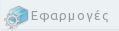

 


|
Καλωσήλθατε!
To "Opendisc-gr | Έκδοση GreekLUG" είναι μια προσπάθεια για την γνωστοποίηση και δοκιμή προγραμμάτων ΕΛ/ΛΑΚ στον κόσμο των Windows.
Μαζέψαμε τα καλύτερα Ελεύθερα και Ανοικτού κώδικα προγράμματα και σας τα παρουσιάζουμε σε ένα πλήρες DVD, το οποίο περιέχει ότι καλύτερο κομμάτι λογισμικού για Windows γνωρίζουμε. Χωρίς adware, spyware, ιούς και χωρίς να χρειάζεται να παίζετε με σπασμένα και αμφιβόλου ποιότητας προγράμματα. Δοκιμάστε 60 προγράμματα από τις διάφορες κατηγορίες!
Οδηγίες Χρήσης
- Αν πατήσετε πάνω στην εικόνα του προγράμματος, θα ανοίξει νέο παράθυρο/νέα καρτέλα με την επίσημη ιστοσελίδα του προγράμματος, που μπορείτε να επισκεφθείτε για περισσότερες πληροφορίες. - Αν πατήσετε πάνω στην εικόνα του "δίσκου"  , που βρίσκεται κάτω από την εικόνα του προγράμματος, τότε θα ανοίξει το σχετικό πρόγραμμα εγκατάστασης για να εγκαταστήσετε και να δοκιμάσετε την εφαρμογή. , που βρίσκεται κάτω από την εικόνα του προγράμματος, τότε θα ανοίξει το σχετικό πρόγραμμα εγκατάστασης για να εγκαταστήσετε και να δοκιμάσετε την εφαρμογή.
- Στα δεξιά των εικόνων υπάρχει αναλυτική περιγραφή του κάθε προγράμματος καθώς και πρόσθετες παρατηρήσεις όπου χρειάζεται. # Οι εφαρμογές είναι σε μορφή .exe, .msi, .zip. Οι δύο (2) πρώτες μορφές είναι εκτελέσιμες και μπορείτε να εγκαταστήσετε αυτόματα το πρόγραμμα που επιλέξατε, ενώ η τρίτη (3) σημαίνει ότι πρόκειται για συμπιεσμένο φάκελο τον οποίον θα πρέπει να αποσυμπιέσετε, πχ στην επιφάνεια εργασίας σας, για να τρέξετε το πρόγραμμα. * Μερικές εφαρμογές προϋποθέτουν την ύπαρξη σύνδεσης Internet για να εκμεταλλευτείτε πλήρως τις δυνατότητές τους. Έκδοση - 1.2.0 | Ένωση Ελλήνων Χρηστών και Φίλων ΕΛ/ΛΑΚ (GreekLUG) |